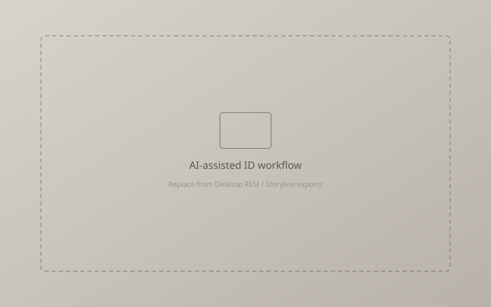
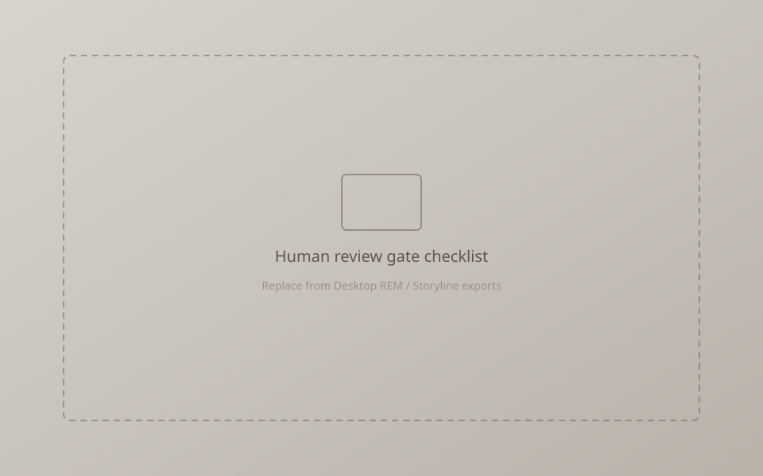

Optional · Modern ID practice
AI-Enhanced Instructional Design Workflow
Using AI-assisted tools as drafting and brainstorming partners—always under human judgment for accuracy, pedagogy, tone, and alignment.
Overview
Modern ID work includes knowing when AI helps and when it harms. This case study documents a practical workflow: AI for first-pass outlines, alternate explanations, distractor brainstorming, or plain-language rewrites—paired with mandatory SME/designer review before anything reaches learners.
Applied in context of Algebra 1 eLearning (Storyline), REM curriculum templating, and assessment item drafting—not as autonomous content generation.
Challenge
Instructional designers face pressure to produce quickly without sacrificing mathematical accuracy or instructional integrity. Uncritical AI use invents facts, weakens cognitive demand, or drifts from standards. The challenge is a workflow that gains speed on low-risk drafting while protecting high-stakes decisions.
Audience
- Hiring managers evaluating modern ID tool fluency
- ID teams defining acceptable AI use policies
- Secondary: learners who benefit only when outputs are verified and well designed
My role
- Defined where AI may draft vs. where humans must author
- Wrote prompts tied to objectives and constraints
- Reviewed outputs for math fidelity and pedagogy
- Integrated accepted drafts into Storyline / curriculum / assessment artifacts
Constraints
- No unchecked AI text in learner-facing materials
- Standards alignment and worked examples verified by human expertise
- Accessibility and tone remain designer-owned
- Privacy: no sensitive student data in prompts
Design process
-
Scope the task
Separate ideation/drafting tasks (safe for AI assist) from final instructional decisions (human-owned).
-
Prompt with constraints
Include objectives, audience, forbidden oversimplifications, and required structure (e.g., GRR phases, item blueprint cells).
-
Critique gate
Check mathematics, cognitive demand, bias, and alignment; reject or heavily revise weak output.
-
Integrate & document
Move accepted language into Storyline screens, REM templates, or items; keep version notes on what changed and why.
Design decisions
- AI drafts; humans decide Speed without ceding instructional authority—especially in mathematics content.
- Critique checklist before merge Accuracy, alignment, load, tone, accessibility—explicit gates reduce silent errors.
- Use for variations, not sole source of truth Alternate explanations or distractors are useful; invented theorems are not.
Solution
A lightweight human-in-the-loop workflow diagrammed as: Brief → AI draft → Designer critique → Revise → SME/self check → Produce. The same loop supports Storyline copy, REM practice prompts, and assessment distractors without claiming AI “built the course.”
Tools
Screenshots / artifacts


Learning principles applied
Designer responsibility
TPACK: technology choices serve pedagogy and content accuracy—not the reverse.
Quality assurance
QM-aligned instinct: clarity, alignment, and integrity checked before publish.
Cognitive load
AI suggestions that add fluff or dual overload are discarded.
Ethics & privacy
No learner PII in prompts; transparent about assistive use in professional practice.
Outcome
Faster drafting cycles on bounded tasks, with instructional quality held by human review. The portfolio claim is fluency with AI-assisted ID under judgment—not automated course generation.
Reflection
Classroom and REM authorship experience is what makes AI usable: you can spot a plausible-sounding wrong explanation quickly. That SME sense is the real control system; the tool is only an accelerator.